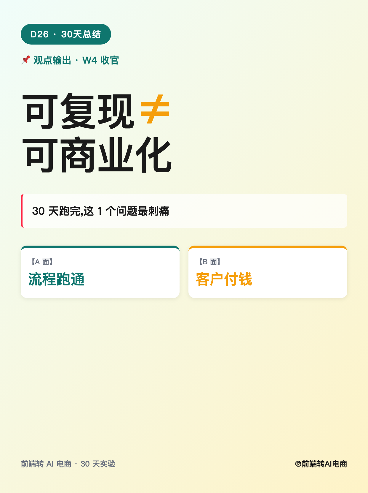
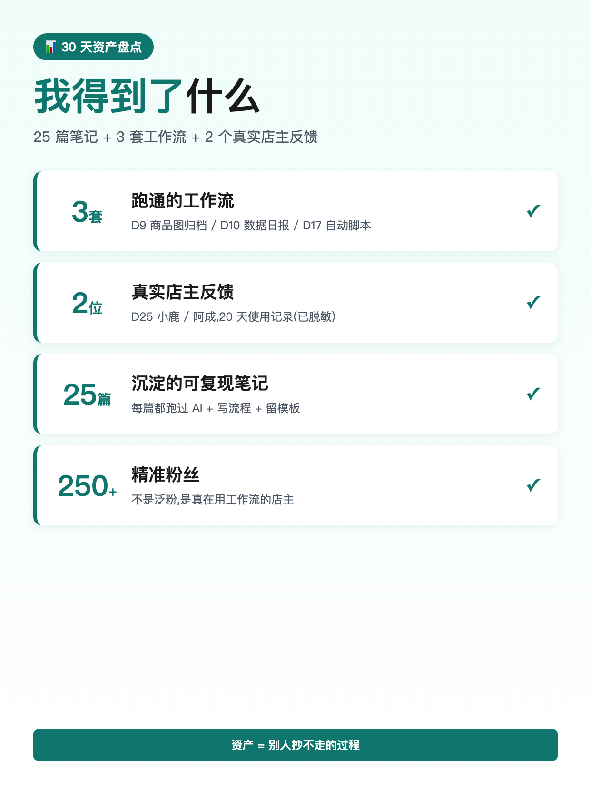
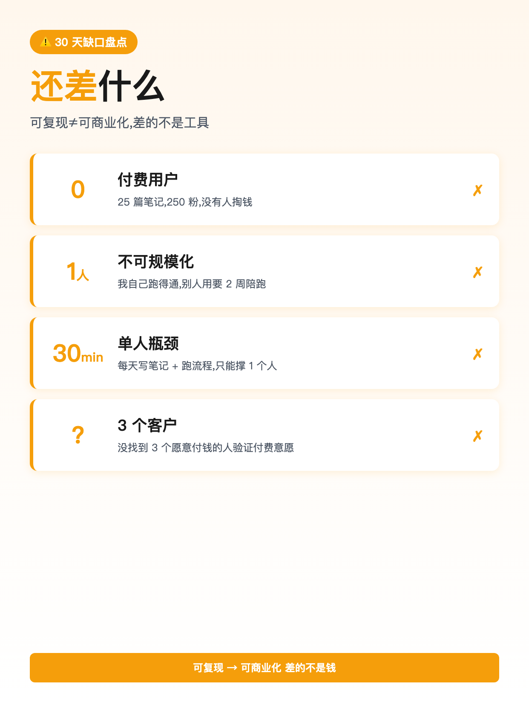
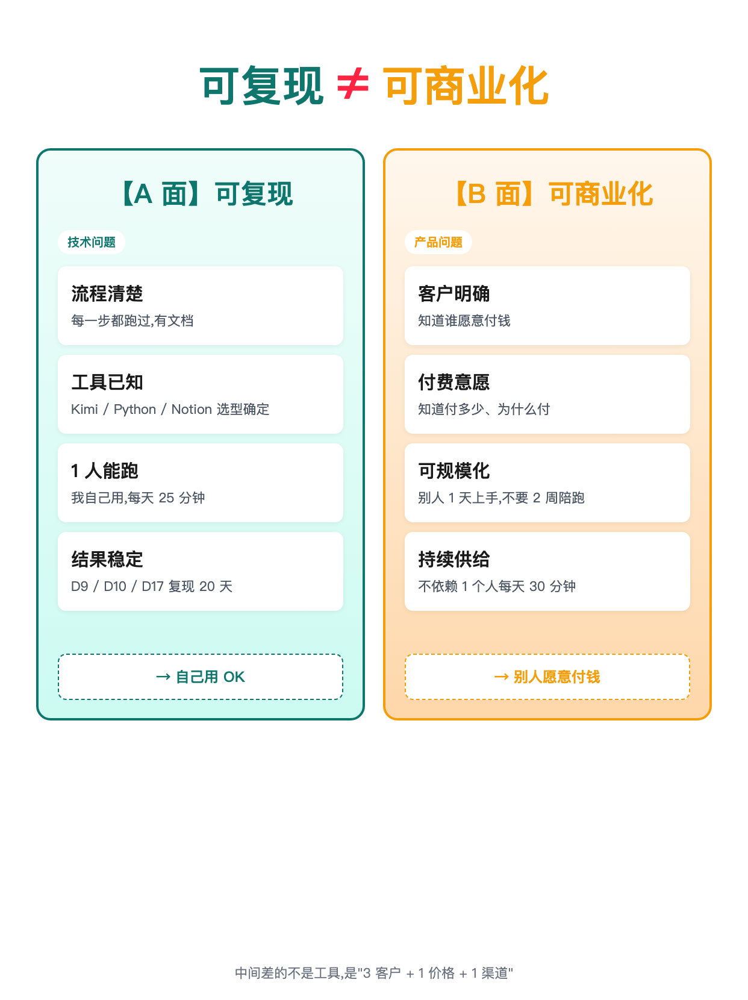
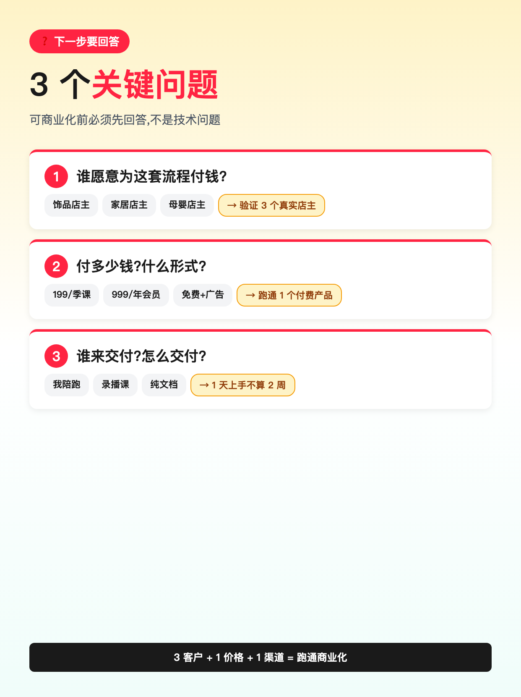
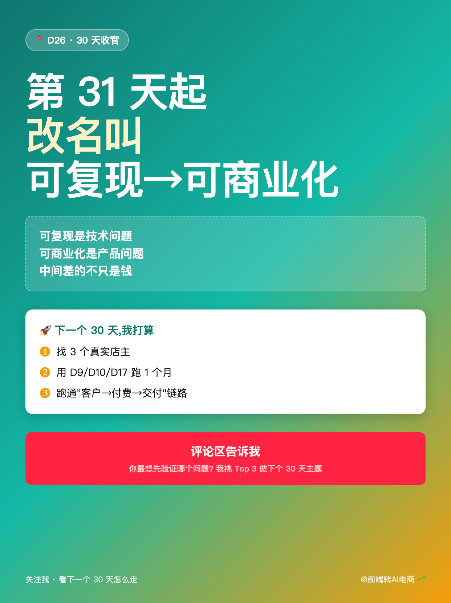

使用说明: 6 张图按顺序上传,标题「可复现≠可商业化」(XHS 上限 20 字 ✓ · 9 字)。
配图通过 HTML+Chrome headless 截图 1242×1660 PNG 生成(中文 100% 清晰)。






可复现≠可商业化
30 天跑完,这 1 个问题最刺痛 我做了 25 篇笔记 + 3 套工作流 + 2 个店主反馈。 但"可复现"≠"可商业化", 这是 30 天教会我最疼的一件事。 ───── 我得到了什么 ───── ✅ 3 套跑通的工作流(D9/D10/D17) ✅ 2 位店主的真实反馈(20 天使用记录) ✅ 25 篇笔记 + 250+ 精准粉 ✅ 9 套提示词 + 5 个工具选型(D16/D24 沉淀) ───── 还差什么 ───── ❶ 0 个付费用户 25 篇收藏,0 人买单 ❷ 1 人瓶颈 我能跑,别人用要 2 周陪跑 ❸ 30 分钟/天 我自己也只能撑 1 个人 ───── 双栏对比 ───── 【可复现 · 技术问题】 流程清楚 / 工具已知 / 1 人能跑 → 自己用 OK 【可商业化 · 产品问题】 客户明确 / 付费意愿 / 可规模化 → 别人愿意付钱 中间差的不是工具, 是"3 客户 + 1 价格 + 1 渠道"。 ───── 下一步要回答的 3 个问题 ───── ❶ 谁愿意为这套流程付钱? 饰品?家居?母婴?还是不是店主? ❷ 付多少?什么形式? 199/季课?999/年会员?免费+广告? ❸ 谁来交付? 我陪跑?录播课?纯文档? ───── 30 天教会我的 ───── 可复现是技术问题 可商业化是产品问题 中间差的不只是钱 ───── 我没做什么 ───── ❌ 没把 25 篇包装成"30 天学会 AI 电商" ❌ 没说"你也能月入 5 万" ❌ 没用 AI 编造"学员案例" ───── 30 天后,我打算 ───── · 找 3 个真实店主,用 D9/D10/D17 跑 1 个月 · 跑通 1 套付费产品(199/季课 or 免费+广告) · 第 31 天起,改名叫 "可复现→可商业化" 30 天 如果你也在做 30 天实验, 你最想先验证什么? 👇 (我会挑 Top 3 做下个 30 天 D2/D5/D8 的主题) 关注我,看下一个 30 天怎么走 🌱
#前端转AI电商
#30天总结
#可复现
#可商业化
#观点输出
♡ 收藏
💬 评论
↗ 分享
📋 一键复制
📊 D26 数据复盘
30 天收官核心观点: 可复现 = 技术问题 / 可商业化 = 产品问题 / 中间差的不是工具,是 3 客户 + 1 价格 + 1 渠道
我得到了什么(4 项): 3 套跑通工作流(D9/D10/D17) + 2 个店主真实反馈(D25) + 25 篇笔记(D1-D25) + 9 套提示词 + 5 个工具选型(D16/D24 沉淀)
还差什么(3 个缺口): 0 个付费用户(25 篇收藏,0 人买单) / 1 人瓶颈(别人用要 2 周陪跑) / 30 分钟/天(只能撑 1 个人)
数字诚实度: 25 篇 = D1-D25 实际发布;3 套 = D9 商品图/D10 数据日报/D17 自动脚本;2 位店主 = D25 案例;9 套提示词 = D16 工具选型;D24 完整复现 = "1 人能跑"佐证
互动钩子: 开放式提问"最想先验证什么"+ 公开承诺下个 30 天 D2/D5/D8 主题(避免"扣字换资源"限流)
🚀 发布前 15 分钟 SOP
- 打开小红书 App → 创建笔记
- 选 6 张图(封面 1 + 得到了 1 + 差什么 1 + 双栏对比 1 + 3个问题 1 + 收尾 1),按顺序排好
- 选 3:4 竖图
- 标题:可复现≠可商业化(XHS 上限 20 字 ✓ · 9 字)
- 正文:点「复制正文」按钮粘贴
- 加 5 个标签
- 选发布时间:周五 20:00-21:00(W4 第 5 天 · 30 天收官 + 周末预热)
- 发布
📈 发布后 24 小时 SOP
| 时间 | 动作 | 目标 |
|---|---|---|
| 10 分钟 | 自己评论「你最想先验证什么?评论区告诉我 👇」 | 激活评论区开放式互动 |
| 30 分钟 | 每条评论认真回复(尤其问"3 客户/1 价格/1 渠道"的) | 评论区密度提升推荐 |
| 2 小时 | 截图保存 D26 数据 + Top 3 评论区问题 | W4 收官素材 + 下个 30 天选题 |
| 6 小时 | 看一次数据(曝光/收藏/评论/Top 3 问题分布) | 判断哪些问题问得最多 |
| 24 小时 | 统计 Top 3 问题,作为下个 30 天 D2/D5/D8 主题 | 下个 30 天 D2/D5/D8 = D26 数据驱动 |
🎯 Day 26 数据目标
| 指标 | 目标 | 备注 |
|---|---|---|
| 曝光 | ≥ 5000 | 30 天收官型(双栏对比图)有冲爆款潜力 |
| 收藏率 | ≥ 25% | 方法论型 = 高收藏(收官盘点 = 干货) |
| 评论 | ≥ 200 | 开放式提问 + 收官话题 + 周五预热 |
| 涨粉 | ≥ 300 | 30 天收官型 = 阶段性爆发 |
| Top 3 问题 | 3 类都有 | 决定下个 30 天 D2/D5/D8 主题 |
💡 关键设计点
1. 标题 = 反常识 + 不对等符号
- 「可复现≠可商业化」 = 不对等符号 ≠ (不是"不是")
- 反常识 = "可复现" 通常被认为"很好",但这里说"≠ 可商业化"
- 9 字 = XHS 上限 20 字内(留 11 字 buffer)
2. 正文 = Why + 得到了什么 + 差什么 + 双栏对比 + 3 问题 + 收尾
- Why(为什么发):30 天跑完最刺痛的洞察
- 得到了什么(4 项):3 套工作流 + 2 个店主 + 25 篇 + 9 套提示词 = 资产盘点
- 差什么(3 个缺口):0 付费/1 人瓶颈/30 分钟 - 诚实反向预期
- 双栏对比:可复现(技术) vs 可商业化(产品) - 视觉化核心观点
- 3 个问题(谁付钱/付多少/谁交付):下个 30 天要回答
- 3 个没做什么:防误解(不暴涨/不万能/不假造)
3. 配图结构(6 张)
- 图 01 = 封面(大字"可复现 ≠ 可商业化" + 30 天跑完最刺痛 + 双色对比 A/B 面)
- 图 02 = 我得到了什么(4 个资产:3 套/2 位/25 篇/250+ 粉)
- 图 03 = 还差什么(3 个缺口:0 付费/1 人/30 分钟,反色警告)
- 图 04 = 双栏对比(可复现 vs 可商业化,左青右橙 4 项对比)
- 图 05 = 3 个关键问题(谁付钱/付多少/谁交付 + 答案方向)
- 图 06 = 收尾(第 31 天起改名叫"可复现→可商业化" + 互动钩子)
4. 跟 D25 承接
- D25 末段承诺"下篇 D26 深度复盘" → D26 兑现(收官型方法论)
- D15 周报"W3 起真实团队反馈" → D25 兑现 → D26 用 2 位店主作为"得到了什么"的资产
- D22 需求清单 → D24 完整工作流复现 → D25 真实反馈 → D26 收官方法论
- D26 收官 → D27 数据复盘 → D28 资源包(D28 公开承诺福利向)
5. XHS 平台合规
- 互动用 开放式提问 + 公开承诺(不用"扣字换资源"模式,避免限流)
- 数字诚实:25/3/2/250 全部基于 D1-D25 实际数据,不夸大
- 3 个"没做什么"防止用户被误导为"暴涨万能"
- 避免"30 天学会 AI 电商"等话术,坚持"可复现≠可商业化"诚实定位
⚠️ 注意事项
- 正文 ≤ 1000 字—— XHS 上限 1000,本版约 920 字,留 buffer 80 字 ✓
- XHS 标题 20 字硬上限—— 当前标题「可复现≠可商业化」= 9 字 ✓
- 核心数据要诚实—— 25 篇/3 套/2 位店主/9 套提示词 全部基于 D1-D25 实际产出,不能拍脑袋
- 双栏对比不夸大—— 0 付费用户 = 25 篇收藏 + 250 粉 + 0 付费,这是真数据
- 不用"扣字换资源"互动—— 任何"扣 1=送""扣全=发"都触发 XHS 限流(7/15 D17 教训)
- 30 天收官 ≠ 结束—— 公开承诺"第 31 天起改名" = 续作预告,留住粉丝
- 发布时间建议周五 20:00—— W4 第 5 天 + 30 天收官 + 周末预热,适合冲爆款